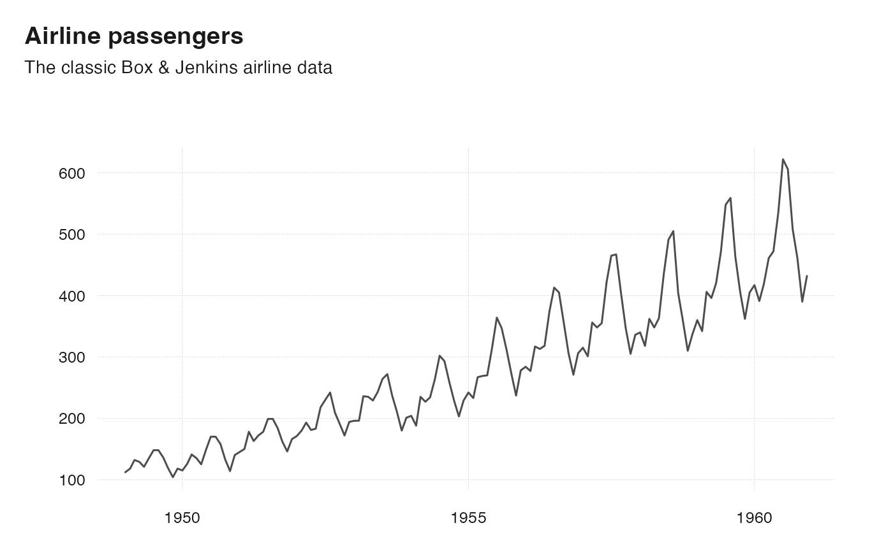
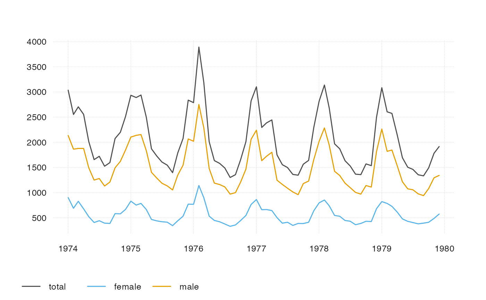
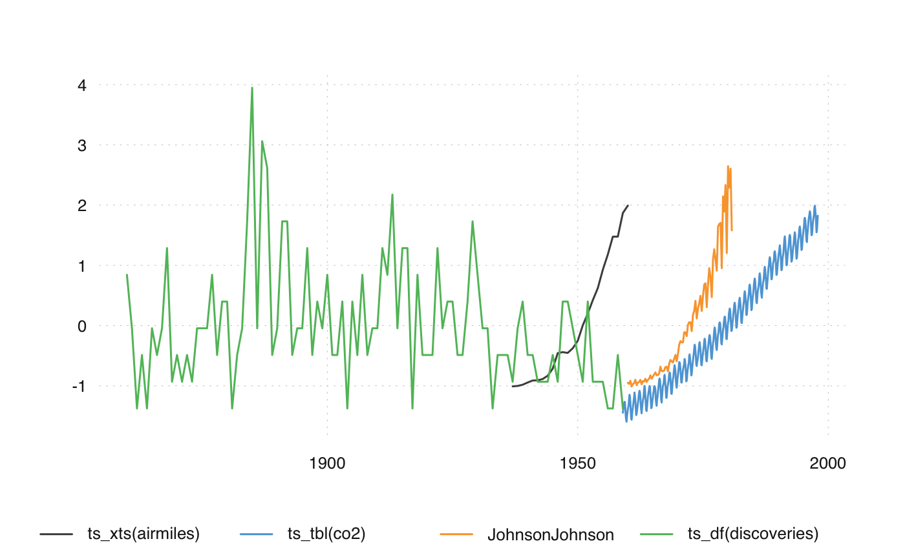
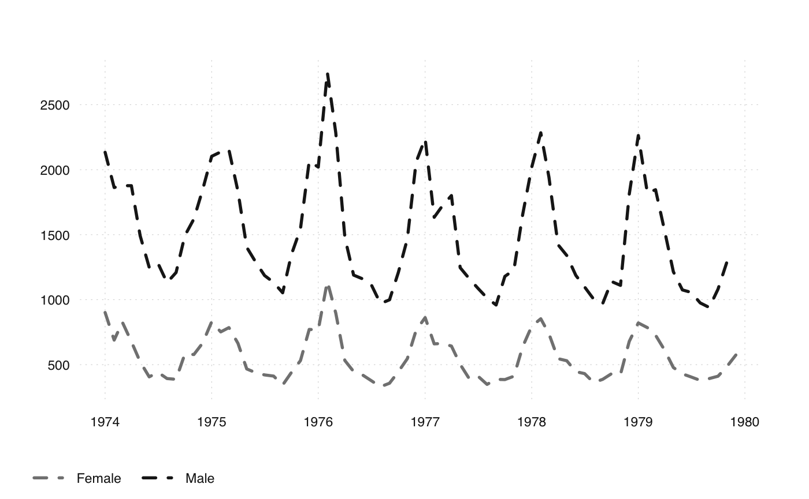

ts_plot() is a fast and simple plotting function for ts-boxable time
series, with limited customizability. For more theme options, use
ts_ggplot().
ts_plot(..., title, subtitle, ylab = "", family = getOption("ts_font", "sans"))
| ... | ts-boxable time series, an object of class |
|---|---|
| title | title (optional) |
| subtitle | subtitle (optional) |
| ylab | ylab (optional) |
| family | font family (optional, can also be set via |
Both ts_plot() and ts_ggplot() combine multiple ID dimensions into a
single dimension. To plot multiple dimensions in different shapes, facets,
etc., use standard ggplot.
Limited customizability of ts_plot is available via options. See examples.
ts_ggplot(), for a plotting function based on ggplot2.
ts_dygraphs(), for interactive time series plots. ts_save() to
save a plot to the file system.
# \donttest{ ts_plot( AirPassengers, title = "Airline passengers", subtitle = "The classic Box & Jenkins airline data" )# naming arguments ts_plot(total = ldeaths, female = fdeaths, male = mdeaths)# using different ts-boxable objects ts_plot(ts_scale(ts_c( ts_xts(airmiles), ts_tbl(co2), JohnsonJohnson, ts_df(discoveries) )))# customize ts_plot op <- options( tsbox.lwd = 3, tsbox.col = c("gray51", "gray11"), tsbox.lty = "dashed" ) ts_plot( "Female" = fdeaths, "Male" = mdeaths )